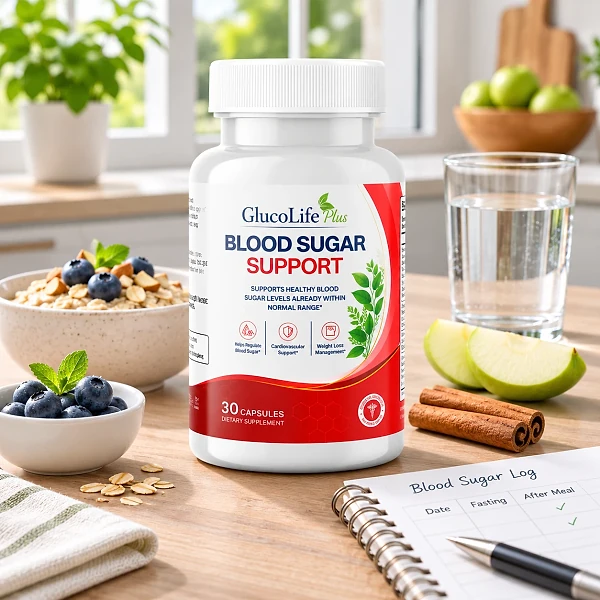
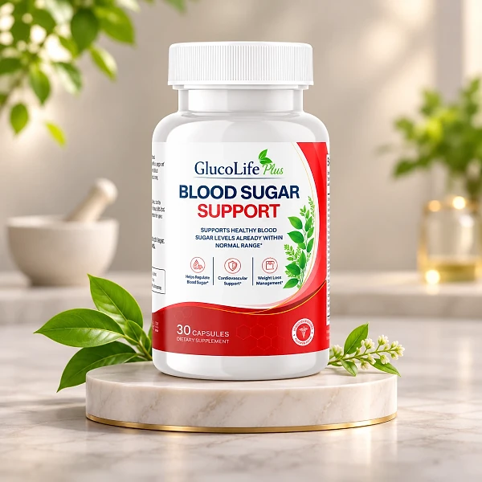

Vad är GlucoLife Plus och hur fungerar det?
GlucoLife Plus är ett kosttillskott i kapselform som är utformat för att ge dagligt näringsstöd för hälsosam blodsockermetabolism. Produkten riktar sig till vuxna som vill komplettera sin kost med en kombination av växtextrakt, mineraler, vitaminer och antioxidanter i en enda formel. Varje flaska innehåller 30 kapslar, och den rekommenderade doseringen är två kapslar dagligen tillsammans med en måltid.
Enligt tillverkarens beskrivning är GlucoLife Plus utformat för att stödja kroppens normala insulinrespons och främja en balanserad glukosanvändning som en del av en hälsosam livsstil. Formeln bygger inte på en enda aktiv förening utan kombinerar elva ingredienser som var och en bidrar med en unik näringsfunktion.
Produkten marknadsförs som ett dagligt näringsstöd snarare än en snabblösning. De botaniska extrakten, mineralerna och vitaminerna är utvalda för att samverka och stödja flera aspekter av metabolisk hälsa, inklusive blodsockerbalans, kardiovaskulärt välbefinnande och vikthantering.
Bland de centrala ingredienserna finns Berberin, som enligt traditionell och modern forskning kan stödja hälsosam glukosmetabolism, samt Gymnema Sylvestre, som traditionellt har använts för att främja hälsosam blodsockerhantering. Organisk Ceylon Kanel ingår också för sitt bidrag till hälsosam kolhydratmetabolism.
Utöver blodsockerstöd innehåller formeln ingredienser som traditionellt har förknippats med kardiovaskulär hälsa, hälsosamma kolesterolnivåer och antioxidantskydd. Alfa-liponsyra, C-vitamin och Zinkcitrat bidrar med antioxidantegenskaper som kan hjälpa till att skydda cellerna mot oxidativ stress.
Det bör betonas att GlucoLife Plus är ett kosttillskott och inte är avsett att ersätta hälsosamma levnadsvanor. Produkten är utformad för att komplettera en balanserad kost och regelbunden fysisk aktivitet, inte ersätta dem. Resultat kan variera från person till person beroende på individuella faktorer som kost, träning och allmänt hälsotillstånd.
Om du tar läkemedel, särskilt för blodsocker eller hjärt-kärlsjukdomar, bör du rådgöra med din läkare innan du börjar använda detta eller något annat kosttillskott, eftersom flera av ingredienserna kan påverka blodsockernivåerna.
GlucoLife Plus – Ingredienser
GlucoLife Plus innehåller en kombination av elva ingredienser som enligt tillverkaren har valts ut för att stödja hälsosam blodsockermetabolism och övergripande metaboliskt välbefinnande. Nedan följer en genomgång av varje ingrediens och dess roll i formeln.
Berberin: En växtförening som är allmänt erkänd för sitt stöd av hälsosam glukosmetabolism och balanserade lipidnivåer. Berberin har studerats för sin potential att stödja kroppens normala insulinrespons.
Gymnema Sylvestre: Ett växtextrakt som traditionellt har använts för att främja hälsosam blodsockerhantering och stödja normal insulinfunktion som en del av en hälsosam livsstil.
Organisk Ceylon Kanel: Sedan länge värderad för sin roll i att stödja hälsosam kolhydratmetabolism och bibehålla balanserade glukosnivåer i kroppen.
Magnesiumglukonat: Bidrar till hundratals enzymatiska reaktioner i kroppen, inklusive de som är involverade i energiproduktion och näringsmetabolism.
Alfa-liponsyra: En kraftfull antioxidant som hjälper till att skydda cellerna mot oxidativ stress och samtidigt stödjer hälsosam metabolisk funktion.
Rölleka: Ett traditionellt botaniskt växtextrakt utvalt för sin kompletterande roll i den övergripande formeln och sin långa historia av användning i örtmedicin.
Vitpilbarksextrakt: Ett klassiskt växtextrakt som ingår för sitt kompletterande bidrag till formelns balanserade botaniska profil.
Lakritsrotsextrakt: Ett välanvänt botaniskt extrakt valt för att avrunda formelns örtkomponent och stödja övergripande välbefinnande.
Zinkcitrat: Ett essentiellt mineral i en väl absorberbar form som bidrar till normala metaboliska processer och dagligt välbefinnande.
C-vitamin: En välkänd antioxidantvitamin som stödjer cellulärt skydd mot oxidativ stress och bidrar till normal metabolisk funktion.
Kaliumklorid: Ett essentiellt mineral utvalt för sin kompletterande roll i att stödja normal kardiovaskulär och metabolisk funktion.
Samtliga ingredienser i GlucoLife Plus härstammar enligt tillverkaren från noggrant utvalda källor. Formeln innehåller inga stimulantia och ingredienserna är utvalda för att samverka som en del av en daglig näringsstödrutin.
Kom ihåg att individuella reaktioner på kosttillskott kan variera. Om du har en känd allergi mot någon av ingredienserna, eller om du tar receptbelagda läkemedel, bör du rådfråga din vårdgivare innan du börjar använda produkten.
GlucoLife Plus – Biverkningar
Enligt tillverkarens information innehåller GlucoLife Plus naturligt härledda ingredienser och inga stimulantia, vilket kan minska risken för vissa vanliga biverkningar som förknippas med andra kosttillskott. Formeln är utformad för gradvis dagligt näringsstöd snarare än omedelbara effekter, och tillverkaren rapporterar inga allvarliga biverkningar i samband med normal användning.
Det bör dock noteras att alla kosttillskott kan orsaka individuella reaktioner. Ingredienser som Berberin kan hos vissa personer orsaka milda mag-tarmbesvär, särskilt under de första dagarna av användning. Gymnema Sylvestre och kanel kan hos känsliga personer ibland leda till lätt illamående eller obehag i magen.
Särskild försiktighet bör iakttas om du tar läkemedel mot diabetes eller högt blodtryck, eftersom flera av ingredienserna i GlucoLife Plus kan påverka blodsockernivåerna. Om du upplever ovanliga symtom som yrsel, kraftig trötthet eller magbesvär som inte avtar, bör du sluta använda produkten och kontakta din läkare.
Gravida och ammande kvinnor, personer under 18 år och personer med kända medicinska tillstånd bör rådgöra med en kvalificerad vårdgivare innan de börjar använda GlucoLife Plus eller något annat kosttillskott. Produkten är inte avsedd att diagnostisera, behandla, bota eller förebygga någon sjukdom, och den bör alltid betraktas som ett komplement till en hälsosam livsstil och inte som en ersättning för medicinsk rådgivning.
GlucoLife Plus – Dosering
Den rekommenderade doseringen av GlucoLife Plus är två kapslar per dag, helst med vatten i samband med en måltid. Att ta kapslarna tillsammans med mat kan underlätta absorptionen av ingredienserna och minska risken för eventuella magbesvär.
Enligt tillverkaren bör kapslarna tas vid ungefär samma tidpunkt varje dag för att bygga upp en konsekvent rutin. Regelbundhet beskrivs som en av de viktigaste faktorerna för att uppnå bästa möjliga resultat med produkten.
Varje flaska innehåller 30 kapslar, vilket räcker i 15 dagar vid den rekommenderade doseringen av två kapslar dagligen. Tillverkaren erbjuder flerflaskepaket för dem som önskar en längre leveransperiod utan avbrott.
Överskrid inte den rekommenderade dosen utan att först ha rådfrågat din vårdgivare. Som med alla kosttillskott fungerar GlucoLife Plus bäst i kombination med en balanserad kost rik på grönsaker, magra proteiner, hälsosamma fetter, fullkorn och fibrer, samt regelbunden fysisk aktivitet.
Tillverkaren rekommenderar att man inte förväntar sig omedelbara resultat, utan att man ger ingredienserna tid att verka som en del av den dagliga rutinen. Vissa användare rapporterar att de märker skillnad efter några veckor, medan andra behöver längre tid. Konsistens i användningen framhålls som nyckeln till produktens potentiella fördelar.
GlucoLife Plus – Återbetalningspolicy
GlucoLife Plus levereras med en 30 dagars pengarna-tillbaka-garanti på varje beställning som görs via den officiella webbplatsen. Denna garanti gör det möjligt för kunder att prova produkten och begära en fullständig återbetalning om de inte är nöjda av någon anledning inom garantiperioden.
Enligt den officiella webbplatsen gäller garantin specifikt för köp gjorda direkt via deras plattform. Köp som görs via andra återförsäljare eller marknadsplatser omfattas inte nödvändigtvis av samma villkor, och tillverkaren kan inte garantera äktheten av produkter som säljs utanför den officiella kanalen.
För att initiera en återbetalning behöver kunden vanligtvis kontakta kundtjänst inom garantiperioden. Den officiella webbplatsen tillhandahåller ett telefonnummer för kundsupport som är tillgängligt dygnet runt. Detaljerad information om returprocessen finns på webbplatsen vid tidpunkten för din beställning.
Det är värt att notera att garantiperioden på 30 dagar räknas från inköpsdatumet. Kunder som överväger att prova produkten under en längre period kan vilja ta hänsyn till detta tidsfönster när de planerar sin utvärdering.
Alla beställningar via den officiella webbplatsen behandlas genom en säker utcheckning med kryptering för betalningsinformation. Betalningsmetoder inkluderar enligt webbplatsen Visa, Mastercard, Apple Pay, Google Pay och PayPal.
Viktigt: Pengarna-tillbaka-garantin beskrivs på den officiella webbplatsen. Vid köp via andra säljare eller marknadsplatser är det inte säkert att du får samma återbetalningsvillkor.
GlucoLife Plus – Var kan man köpa det?
GlucoLife Plus säljs enbart via tillverkarens officiella webbplats. Produkten finns inte i fysiska butiker, apotek eller på stora e-handelsplattformar. Denna distributionsmodell, som är vanlig bland kosttillskott av den här typen, innebär att tillverkaren behåller kontrollen över produktkvaliteten och kundupplevelsen.
Att köpa via den officiella webbplatsen säkerställer att du får den äkta produkten med full tillgång till den 30 dagars pengarna-tillbaka-garanti som tillverkaren erbjuder. Webbplatsen erbjuder flera paketval, från enstaka flaskor till flerflaskepaket med leverans inkluderad i beställningen.
Betalningsprocessen på den officiella webbplatsen sker via en säker utcheckning som skyddar personuppgifter och betalningsinformation. Leverans sker vanligtvis med erkända transportföretag, och leveranstiden beror på din plats.
Vi rekommenderar att du undviker att köpa GlucoLife Plus från tredjepartssäljare eller auktionssajter, eftersom det inte finns någon garanti för att produkten är äkta eller att den har förvarats korrekt. Tillverkarens garanti och kundsupport gäller enbart för köp via den officiella kanalen, och produkter köpta på annat håll kan ha en annan sammansättning.
För att vara säker på att du får den äkta produkten väljer de flesta användare att beställa via den officiella webbplatsen.
Är GlucoLife Plus en bluff?
Utifrån tillgänglig information finns det inga indikationer på att GlucoLife Plus är en bluff. Produkten säljs via en egen officiell webbplats där ingredienser, dosering, kontaktuppgifter och en 30 dagars pengarna-tillbaka-garanti tydligt presenteras.
Tillverkarens webbplats anger ett kundtjänsttelefonnummer som är tillgängligt dygnet runt samt erbjuder säker betalningshantering via krypterade servrar. Dessa egenskaper är vanliga bland seriösa kosttillskottsföretag och ger köpare en viss trygghet.
Positivt är att den fullständiga listan över elva ingredienser publiceras öppet. Detta innebär att du kan granska vad produkten innehåller innan du köper och vid behov diskutera ingredienserna med din läkare eller apotekare.
Den 30 dagars pengarna-tillbaka-garantin ger köpare möjlighet att prova produkten och begära återbetalning om de inte är nöjda. Läs dock de exakta villkoren på den officiella webbplatsen innan du beställer, eftersom returprocessen kan innefatta specifika steg.
Försiktighet bör iakttas med erbjudanden utanför den officiella webbplatsen. Efterbildningar eller produkter av okänt ursprung kan ha en annan sammansättning, och vid sådana köp gäller tillverkarens garanti i regel inte.
Som med alla kosttillskott bör du ha realistiska förväntningar: resultat kan variera, och ett kosttillskott ersätter inte medicinsk behandling. Den som beaktar dessa punkter och beställer direkt från tillverkaren tar enligt nuvarande information ingen särskild risk vid köp av GlucoLife Plus.
Om du vill kontrollera produktdetaljer eller aktuell tillgänglighet är den officiella webbplatsen för GlucoLife Plus det säkraste alternativet.
